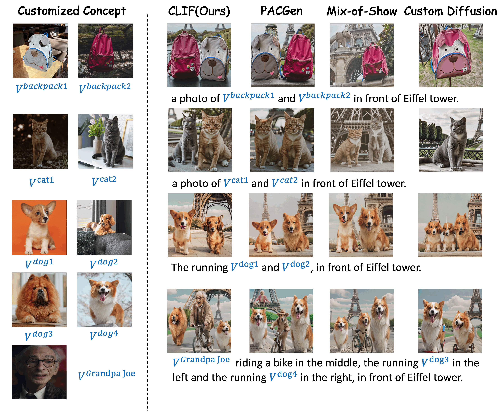
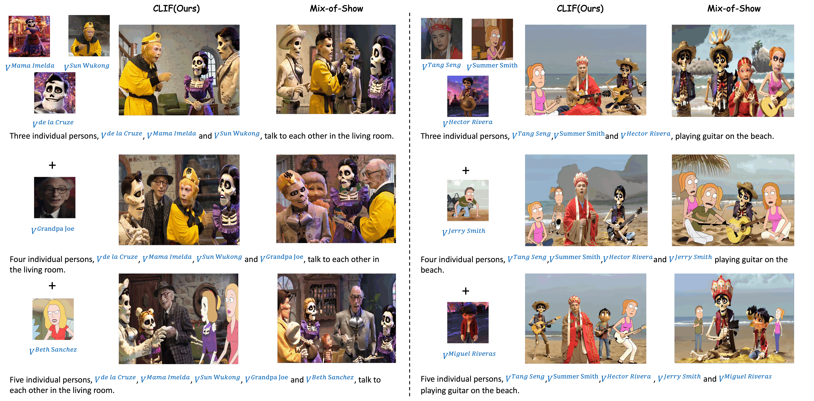

More Results

Figure 1. The experimental results demonstrate that our approach generalizes well to Dreambench and successfully mitigates the confusion between general objects, such as dog1 and dog2
Figure 2. The results generated by both the initial diffusion model demonstrate that the chosen characters are not present in the initial diffusion model.
Figure 3. Most of the objects can be accurately recognized by GPT-4, and other open-source MLLMs like Llava also have acceptable performance.
Figure 4. We employ t-SNE to illustrate the variations in the embedding space, demonstrating the significant increase in distance between different concepts before and after contrast fine-tuning.

Figure 5. We supplement results for the customized generation of 3-5 concepts, revealing a gradual increase in confusion as more concepts are added. However, our method still remains clearly superior to other methods.
Figure 6. Compare the CLIF generation results for a given single reference image with training-based customization models like ELITE and BLIP-diffusion.
Figure 7. The generation results under different random seeds
 Concpet Bank. We curate a dataset consisting of $18$ representative characters, including 9 real-world, 4 3D-animated, and 5 2D-animated. Each of them possesses unique visual appearances that must be preserved in the customized generation.
Concpet Bank. We curate a dataset consisting of $18$ representative characters, including 9 real-world, 4 3D-animated, and 5 2D-animated. Each of them possesses unique visual appearances that must be preserved in the customized generation.